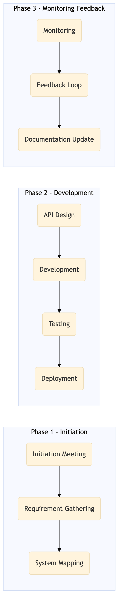

This process document outlines the integration and management of Direct Airline APIs and NDC (New Distribution Capability) for OTA systems like Expedia Open World, Partner Central, Amadeus NDC, Sabre GDS, Travelport, EVC, One Key, TravelAds, AWS SageMaker, Snowflake, Kafka, Salesforce, Tableau and TMC systems such as SAP Concur T2, SAP Concur Expense, Amex GBT Neo/Complete, Amadeus GDS, SAP S/4HANA, International SOS, Cvent, Amex Corporate Card, VCN, SAP Analytics Cloud, Workday.
| Trigger | Initiation of a new integration or update to existing Direct Airline API and NDC integrations |
| Outcome | Successful integration and management of Direct Airline APIs and NDC, ensuring seamless data exchange between OTA and TMC systems, improved booking accuracy, and enhanced customer experience. |
| Systems | Expedia Open World Partner Central Amadeus NDC Sabre GDS Travelport EVC One Key TravelAds AWS SageMaker Snowflake Kafka Salesforce Tableau SAP Concur T2 SAP Concur Expense Amex GBT Neo/Complete Amadeus GDS SAP S/4HANA International SOS Cvent Amex Corporate Card VCN SAP Analytics Cloud Workday |

Click to enlarge
| Step | Name & Pain Point | Role | System | Input | Output | KPI | Flags |
|---|---|---|---|---|---|---|---|
| 1.1 | Initiation Meeting Scope Creep | Project Manager | N/A | Project Brief | Action Plan | N/A | ◆ Decision |
| 2.1 | Requirement Gathering Incomplete Requirements | Business Analyst | N/A | Stakeholder Interviews | Requirements Document | N/A | ◆ Decision |
| 3.1 | System Mapping Complex System Interactions | Technical Lead | Expedia Open World, Partner Central, Amadeus NDC, Sabre GDS, Travelport, EVC, One Key, TravelAds, AWS SageMaker, Snowflake, Kafka, Salesforce, Tableau, SAP Concur T2, SAP Concur Expense, Amex GBT Neo/Complete, Amadeus GDS, SAP S/4HANA, International SOS, Cvent, Amex Corporate Card, VCN, SAP Analytics Cloud, Workday | Requirements Document | System Mapping Diagram | N/A | ◆ Decision |
| 4.1 | API Design API Compatibility Issues | API Developer | AWS SageMaker, Snowflake, Kafka, Salesforce, Tableau | System Mapping Diagram | API Specification Document | N/A | ◆ Decision |
| 5.1 | Development Technical Debt | API Developer | AWS SageMaker, Snowflake, Kafka, Salesforce, Tableau | API Specification Document | Developed API | N/A | ◆ Decision |
| 6.1 | Testing Defect Leakage | QA Engineer | AWS SageMaker, Snowflake, Kafka, Salesforce, Tableau | Developed API | Test Report | N/A | ◆ Decision |
| 7.1 | Deployment Deployment Failures | DevOps Engineer | AWS SageMaker, Snowflake, Kafka, Salesforce, Tableau | Developed API | Deployed API | N/A | ◆ Decision |
| 8.1 | Monitoring Performance Bottlenecks | DevOps Engineer | AWS SageMaker, Snowflake, Kafka, Salesforce, Tableau | Deployed API | Monitoring Dashboard | Response Time < 200ms, Error Rate < 5% | ◆ Decision |
| 9.1 | Feedback Loop Continuous Improvement | Project Manager | N/A | Monitoring Dashboard | Improvement Plan | N/A | ◆ Decision |
| 10.1 | Documentation Update Outdated Documentation | Technical Writer | N/A | API Specification Document, Test Report, Monitoring Dashboard | Updated Documentation | N/A | ◆ Decision |